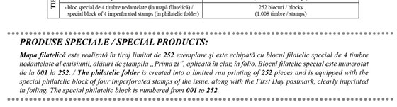

Romanian Post creating artificial scarcity
Victor Manta
Introduction
Here is an excerpt from the "Philatelic Code of Ethics for the use of UPU member countries" adopted and mandatory for all countries members of the UPU (including Romania).
Also recognizing that the Philatelic Code of Ethics as adopted by the Bucharest Congress has provided valuable guidance to the issuing postal authorities of UPU member countries in maximizing the value of postage stamps to collectors and issuing postal authorities
1.1 Philatelic products within the scope of this code include, but are not limited to:
...
– presentation packs and albums;
4 For each issue of postage stamps, issuing postal authorities shall ensure that these are printed in sufficient quantity to meet potential operational requirements and foreseeable philatelic needs.
7 Whilst issuing postal authorities have no control over the use of postage stamps or articles entrusted to the postal service for postal purposes once they have been sold, they shall nevertheless:
7.1 Not support or acquiesce in any artifice intended to enhance sales of their postage stamps or products incorporating postage stamps by suggesting a potential scarcity of these products.
8 Issuing postal authorities shall not produce postage stamps or philatelic products that are intended to exploit customers.
Source: https://www.upu.int/UPU/media/upu/DL.PHIL/RecommandationC13-2016CodeOfEthicsEn.pdf
A recent violation of the UPU Code of Ethics
Let us look more attentivelyat the recent issue "Butterflies" of the Romanian Post (Romfilatelia), presented on its site .

- special block of 4 imperforated stamps (in philatelic folder). 252 blocks (1008 stamps).
SPECIAL PRODUCTS. The philatelic folder is created into a limited run printing of 252 pieces and is equipped with the special philatelic block of four imperforated stamps of the issue ... The special philatelic block is numbered from 001 to 252.

The image of the map (folder)

Philatelic map butterflies. 192.00 lei.
Comments
Please notice the print run of only 192 maps that contain a sheet of four imperforated stamps. The sheet is only offered in these maps.
The price of the map is outrageous, especially for a Romanian stamp collector. 192 lei (RON) means about 43 UD Dollars or 39 Euro, which makes it unaffordable for most collectors in Romania.
Everything presented makes this sheet a clear violation of the recommendations of the UPU Philatelic Code of Ethics.
A link to the older page: STAMP COLLECTORS - THE MILKING COWS OF ROMFILATELY is here.